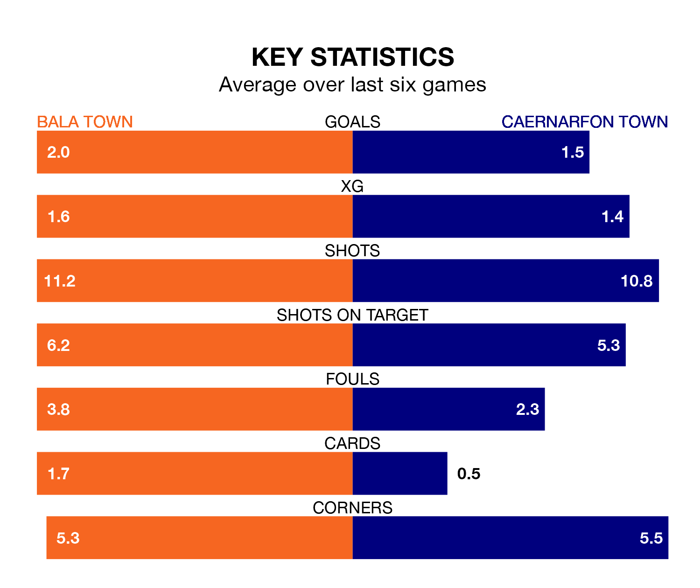

Bala Town host Caernarfon Town in Friday's late match at Maes Tegid looking to bounce back from defeat last time out in the Welsh Premier League.
The Lakesiders, who sit third in the league after 26 games, fell to a 0-1 home defeat to Connah's Quay on March 1.
They face a Caernarfon side who picked up a win in their last match, a 1-0 victory against Newtown, and who sit fourth in the table.
With 32 goals in 26 games so far this season, Bala are the league's joint-lowest scorers with 1.2 goals per game. But they are conceding fewer than average too, letting in 23 goals at a rate of 0.9 per game.
Caernarfon, meanwhile, are above average scorers, with 1.7 goals per game, compared to a league average of 1.5. They have conceded 2.0 goals per game.
In the last 10 years, Bala and Caernarfon have played each other on 20 occasions. Bala won 11 of them, Caernarfon four, and they drew five times.
On average, the Lakesiders scored 2.1 goals and the Canaries 1.1 in those matches.
Their last meeting was on November 28, when they played out a 1-1 draw.
Bala Town are in good form in the Welsh Premier League, with four wins and a draw from their last six games.
With two wins and three draws over that period, Caernarfon Town's form is worse – they have taken nine points from 18, compared to the Lakesiders' 13.
Updated: 09:34 (UTC), 08/03/24